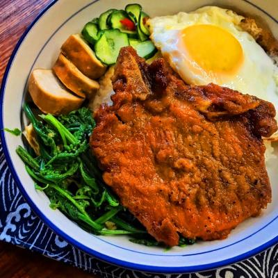

林員肉圓
林員肉圓
推薦程度： ★ ★ ★ ★ ☆
推薦程度： ★ ★ ★ ★ ☆
店家介紹
林家肉圓是一家知名的台灣小吃店，以其獨特的口味和豐富的肉圓選擇而受到廣泛喜愛。他們的肉圓外皮細薄而有嚼勁，內餡則是用新鮮的豬肉和各種香料經過精心調配製作而成。 林家肉圓以傳統的手工製作方式聞名，每一個肉圓都經過細心的包裹和蒸煮，確保每一口都能帶來最美味的享受。肉圓內的肉末鬆軟多汁，搭配著香氣四溢的辣椒醬，絕對能夠滿足您對美食的渴望。 除了傳統的肉圓，林家肉圓還提供各種口味的變化，例如蔥油肉圓、韭菜肉圓和花枝肉圓等等，滿足不同人的喜好。無論您是喜歡辣味、清淡口味還是特別的配料，林家肉圓都能滿足您的味蕾。 這家肉圓店的獨特之處在於他們的堅持和用心，只選用最好的食材並保持傳統手工製作的方式。無論是當地居民還是遠道而來的遊客，都能夠在林家肉圓品嚐到地道的台灣美食風味。 總結來說，林家肉圓以其精湛的手藝和美味的肉圓聞名，為您帶來一個口感豐富、令人回味無窮的用餐體驗。無論您是台灣本地人還是來自其他地方的遊客，都絕對不要錯過這家台灣小吃的經典之作。林員肉圓: 237新北市三峽區大德路139號 電話 : 02 8672 2389 營業時間：除星期二 11:00–14:00, 17:00–20:00
美食品項
| 品項 | 描述 |
|  |
古早味排骨飯是一道具有濃厚台灣風味的美食，讓人回味無窮。這道美食主要由嫩煮的豬排骨和香氣四溢的白飯組成，再搭配獨特的調味醬汁和各種配菜，給您帶來滿滿的滿足感。古早味排骨飯的排骨經過特殊的烹調方式，讓肉質鮮嫩多汁，帶有微妙的香氣。每一口咬下去，豬排骨的鮮味與嫩滑的口感會在您的口腔中爆發出來，讓人難以抗拒。配菜也是這道美食的亮點之一，例如酸甜的醬汁、酥脆的油蔥薑絲、清脆的酸菜或者滷蛋等等。這些配菜為古早味排骨飯增添了豐富的層次感和口感，讓整道菜更加美味。古早味排骨飯經常被視為台灣的代表性美食之一，因為它不僅美味，而且有著濃厚的家鄉味道和懷舊情懷。這道菜常常可以在台灣的小吃攤或餐廳中找到，讓您能夠輕鬆品嚐到地道的台灣風味。總結來說，古早味排骨飯是一道令人垂涎的台灣美食，將嫩煮的排骨、白飯和多種配菜結合在一起，呈現出豐富的口感和美味。不論您是台灣本地人還是外地遊客，都絕對值得一試這道充滿懷舊風味的美食。
|